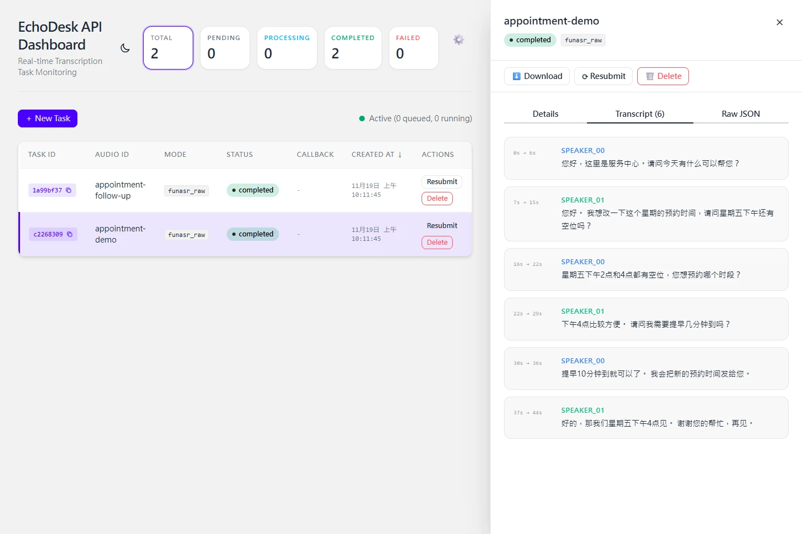
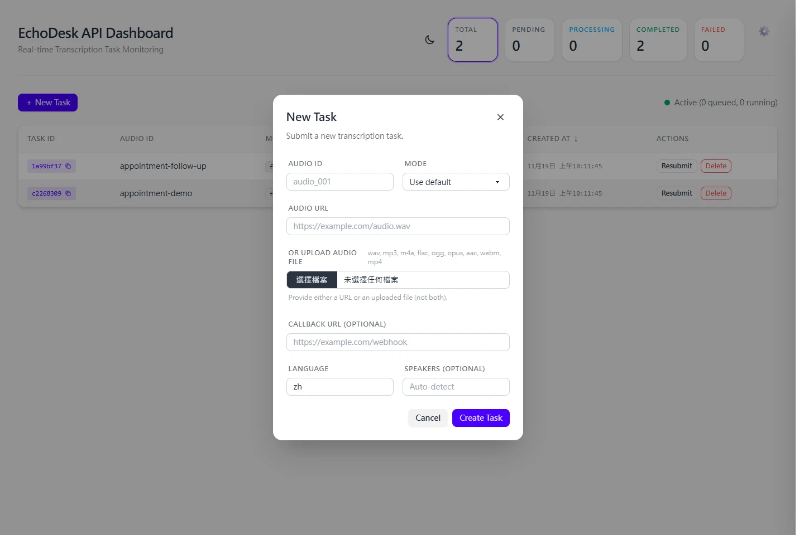

Who spoke and when
Voice activity detection finds speech, SenseVoice transcribes it, and CAM++ speaker embeddings help group the timestamped segments by speaker.
Chinese speech transcription with speaker diarization.
EchoDesk turns an audio recording into a timestamped transcript grouped by speaker. Teams can use the CLI or submit jobs to a FastAPI service and review the results in a browser. Optional AI post-processing adds role labels, a summary and follow-up actions.

Solo Developer
I built EchoDesk’s transcription pipeline, API, task queue, and browser interface. I designed the local mode to transcribe Chinese speech and identify who spoke when on a standard CPU-only computer, so users can process recordings on their own hardware without a dedicated GPU.
Voice activity detection finds speech, SenseVoice transcribes it, and CAM++ speaker embeddings help group the timestamped segments by speaker.
FunASR can run entirely locally. Optional post-processing can use a local llama.cpp model or OpenRouter, which also provides a direct multimodal transcription mode.
SQLite stores job state so pending jobs and expired in-progress jobs can be recovered. Webhook retries run separately from transcription workers.
The API accepts an audio upload or URL, queues the job, and sends it to the selected transcription pipeline.
SQLite stores job state while workers handle transcription with a concurrency limit.
Job recovery Resume queued work and reclaim in-progress jobs after their leases expire.
Screenshots from the local Docker demo using synthesized Mandarin dialogue. Select an image to enlarge it.

Submit a recording, track the job’s status and review callback delivery from the same workspace.
The result drawer shows when each speaker talks. The transcript is also available to download.